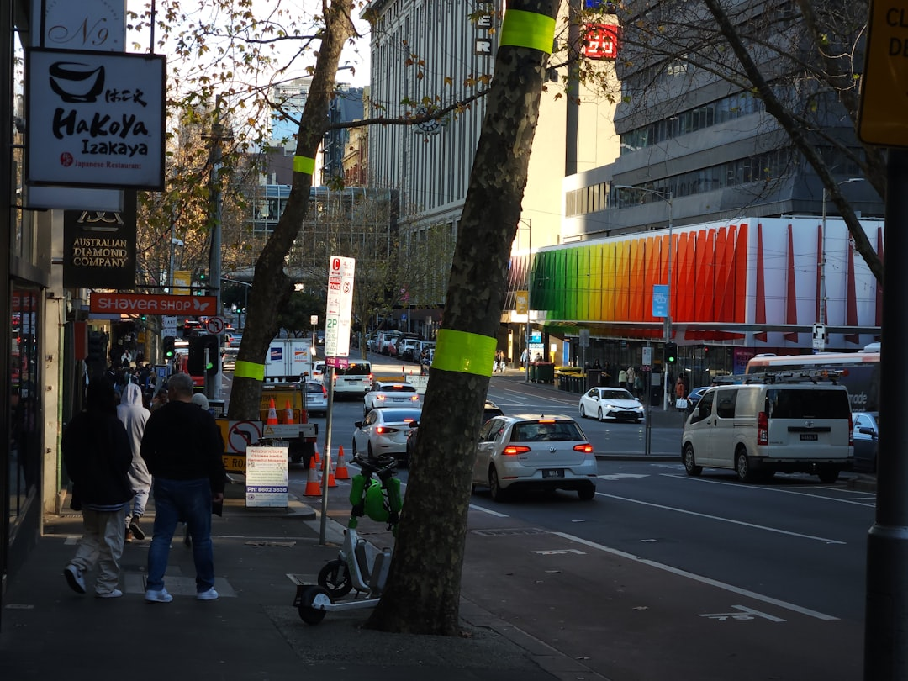

For diners weighing up Melbourne options, the supplied source page points to a practical shortlist method: start with 9 provider types, narrow by location or cuisine, then compare reviews, photos, services and pricing before contacting a venue directly. The directory also says quotes are free, which makes it useful for private dining, event planning or any booking where you want to check fit before committing.
For anyone comparing restaurants melbourne options, the useful question is not where to start eating, but how to sort categories, locations, reviews and contact steps into a shortlist that actually suits the occasion.
Restaurants Melbourne Explained
Best Melbourne Restaurants frames the search process in a simple way: browse provider types or search by location, compare reviews, photos, services and pricing, then contact the venue directly. That structure is more useful than scrolling aimlessly because it gives you three distinct filters, cuisine, suburb and profile detail, before you make contact.
If you want a second editorial angle on the same topic, this Melbourne restaurant guide is the only related cross reference included here. The practical takeaway is the same: decide the occasion first, then use the directory filters to remove options that do not match the booking style, menu preference or location you need.
A fast first pass usually works best. Pick one category, then one location, then open only the profiles that already show the kind of service level and setting you want. That keeps your shortlist readable and reduces the usual problem of comparing too many venues at once.
Use category pages to avoid mismatched venues
The source page groups listings into Asian, Casual & Family, Fine Dining, Italian, Modern Australian, Seafood, Steak & Grill, and Vegetarian & Vegan. Those labels are not just menu cues. They help separate venues by dining style, likely pace of service and the kind of occasion they suit.
If you are planning a quick family meal, a formal dinner and a seafood focused catch up, you do not need the same shortlist for each. Starting with the right category cuts out obvious mismatches before you spend time reading profiles. It also gives you cleaner comparison points when you reach the pricing and reviews stage.
- Use cuisine led pages when the food style is already decided.
- Use Casual & Family or Fine Dining when the service style matters more than one dish type.
- Use Vegetarian & Vegan when dietary preference needs to be solved at the start, not after the shortlist is built.
That approach creates a better shortlist than mixing every venue type into one comparison list.
Location matters when the booking depends on movement
The source page highlights Collingwood, Fitzroy, Carlton, Docklands and Southbank as popular locations. The useful way to read that is not as a suburb checklist but as a reminder that location changes the booking decision. A venue chosen for a pre theatre meal, a city meeting, a South Yarra outing or a waterside evening can fail even when the menu looks right if the area does not fit the plan.
When location is the main constraint, start there and only then compare category. That is especially helpful when a group is arriving from different parts of Melbourne, when you want a venue near another activity, or when the booking is tied to a time window and travel convenience matters as much as cuisine.
The source page also shows specific venue examples across Melbourne and South Yarra, which suggests the directory is meant to be used as a local sorting tool rather than a single style guide. Use the area filter to reduce travel friction first, then test the shortlist on reviews, photos and service details.
Read profiles for evidence, not just appeal
The strongest part of the supplied page is the profile comparison logic. It tells users to read reviews, view photos, and compare services and pricing. That means a venue profile should do more than look attractive. It should answer whether the place fits the actual booking brief.
Reviews help with consistency, photos help with atmosphere and layout, services help with fit, and pricing helps you rule in or rule out options before contact. If a booking has any complexity, a larger group, a celebration, a menu preference or timing sensitivity, those four checks are more useful than relying on cuisine alone.
Useful questions to carry into each profile include:
- Does the setting in the photos match the tone of the booking?
- Do the listed services suggest the venue suits your occasion?
- Is there enough pricing detail to decide whether a direct enquiry is worth making?
- Do the reviews add confidence about the overall experience rather than one standout dish?
That reading method turns a directory page into a decision tool instead of a casual browse.
Who this approach suits best
This comparison method suits diners who already know the broad shape of the meal but still need to narrow the field. It works for people choosing between cuisine types, for small groups trying to balance neighbourhood and style, and for anyone who wants to contact venues only after a basic fit check.
It is also useful if you prefer to read before you enquire. The source page includes Resources & Guides alongside category and location browsing, which signals that some users want context first and contact second. That can be the better route when you are planning ahead, comparing several areas, or trying to avoid wasting time on venues that look appealing but do not suit the occasion.
For business owners, the same page also says listings can be claimed for free or upgraded to Pro for priority placement, photos and lead tracking. Readers do not need that feature to choose where to eat, but it does explain why profile completeness matters when you are comparing one listing against another.
- Choose the first filter. Start with either category or location, depending on whether cuisine or travel convenience matters most.
- Open only plausible profiles. Use reviews, photos, services and pricing to remove poor fits before making contact.
- Contact the best matches. Enquire directly only after the shortlist reflects the occasion, location and budget comfort level.
| Starting point | Best when | What to compare next |
|---|---|---|
| Category page | You already know the cuisine or dining style | Reviews, photos, services and pricing |
| Location page | Travel convenience or neighbourhood is the main constraint | Category fit and profile detail |
| Resources and guides | You want context before contacting venues | Then move into category or suburb pages |
Common questions
What is the most practical way to use a Melbourne restaurant directory? Start with one filter, either cuisine or location, then compare reviews, photos, services and pricing on the remaining profiles. The source page presents that order as the core browsing method.
Should I search by suburb or by cuisine first? Search by suburb first when travel convenience or the surrounding plan matters most. Search by cuisine first when the food style or dining format is already settled.
What information on a profile is most useful before I enquire? The source page points to reviews, photos, services and pricing. Together, those checks tell you whether the venue is worth contacting for your specific occasion.
Is the directory only for finding venues, or can it help with comparisons too? It is clearly set up for comparison as well as discovery. The supplied page says users can read reviews, compare services and pricing, and get quotes for free.
This guide covers how to compare Melbourne dining options using category, location and profile signals from the supplied source page.